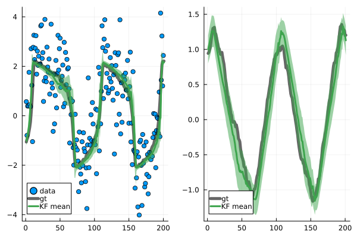

Kalman filter for non-linear dynamics
using LinearAlgebra
using Random
using Distributions
using ForwardDiff
using Plots
using PhDSEFirst, define a function that allows us to draw samples from the state-space model.
function simulate_nonlinear(
f::Function,
Q,
h::Function,
R,
μ₀,
Σ₀,
N::Int;
rng = Random.GLOBAL_RNG,
)
x = rand(rng, MvNormal(μ₀, Σ₀))
states = [x]
observations = []
for i in 1:N
push!(states, rand(rng, MvNormal(f(states[end]), Q(x))))
push!(observations, rand(rng, MvNormal(h(states[end]), R(x))))
end
return states, observations
endThen, define the actual state-space model:
d, D = 1, 2
μ₀ = [-1.0, 1.0]
Σ₀ = [0.01 0.0
0.0 0.01]
a, b, c = 0.2, 0.2, 3.0
function f(x)
x1, x2 = x
return [
x1 + 0.1 * (c * (x1 - x1^3 / 3 + x2)),
x2 + 0.1 * (-(1 / c) * (x1 - a - b * x2)),
]
end
function h(x)
return x[1:1]
end
A(x) = ForwardDiff.jacobian(f, x)
Q(x) = Matrix{Float64}(0.001 * I(D))
H(x) = Matrix{Float64}(I(D))[1:1, :]
R(x) = Matrix{Float64}(I(d))
u(x) = f(x) - A(x) * x
v(x) = zeros(d)Next, generate an example state trajectory and according measurements.
N = 200
ground_truth, observations = simulate_nonlinear(f, Q, h, R, μ₀, Σ₀, N)Compute the filtering posterior...
cache = init_cache_moments!(FilteringCache(), μ₀, Σ₀)
kf_traj = [(copy(μ₀), copy(Σ₀))]
for y in observations
kf_m, kf_C = kf_traj[end]
kf_m, kf_C = kf_predict!(
cache,
A(kf_m),
Q(kf_m),
u(kf_m),
)
kf_m, kf_C = kf_correct!(
cache,
H(kf_m),
R(y),
y,
v(kf_m),
)
push!(kf_traj, (copy(kf_m), copy(kf_C)))
end... and plot the results:
kf_means = [m for (m, C) in kf_traj]
kf_stds = [2sqrt.(diag(C)) for (m, C) in kf_traj]
plot_x1 = scatter(1:length(observations), [o[1] for o in observations], color = 1, label="data")
plot!(plot_x1, 1:length(ground_truth), [gt[1] for gt in ground_truth], label="gt", color=:black, lw=5, alpha=0.6)
plot_x2 = plot(1:length(ground_truth), [gt[2] for gt in ground_truth], label="gt", color=:black, lw=5, alpha=0.6)
plot!(
plot_x1,
1:length(kf_means),
[m[1] for m in kf_means],
ribbon = [s[1] for s in kf_stds],
label = "KF mean",
color = 3,
lw = 3,
)
plot!(
plot_x2,
1:length(kf_means),
[m[2] for m in kf_means],
ribbon = [s[2] for s in kf_stds],
label = "KF mean",
color = 3,
lw = 3,
)
res_plot = plot(plot_x1, plot_x2, layout = (1, 2))
savefig(res_plot, "kalman_filter_example.svg")